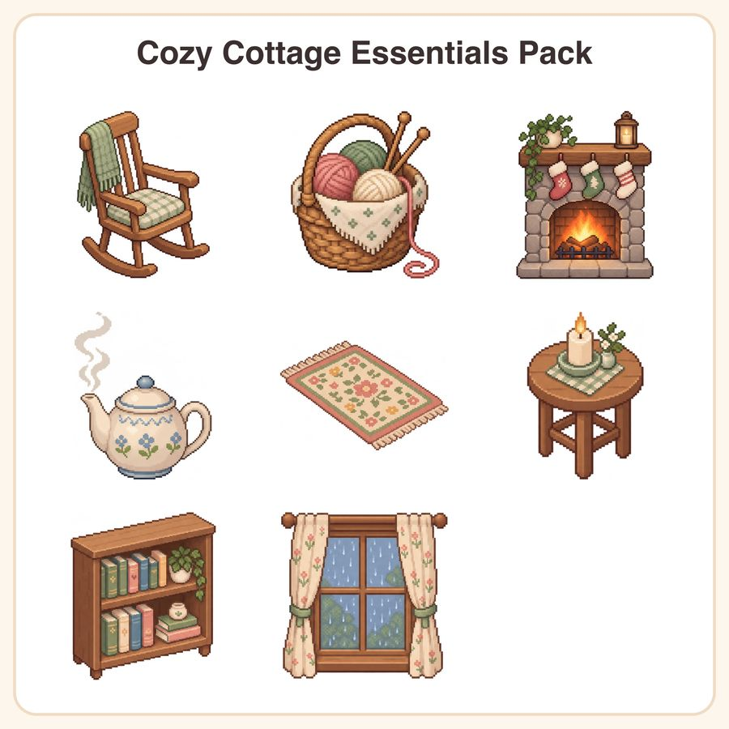

$7.99
Buy nowGet it on itch.ioView on EtsyCreate warm, inviting game worlds with this charming Cozy Cottage Essentials Pack. What's Included: • 1 Wooden Rocking Chair • 1 Knitting Basket with Yarn • 1 Lit Fireplace with Stockings • 1 Ceramic Teapot with Steam • 1 Plush Area Rug with Floral Pattern • 1 Candle on Wooden Table • 1 Small Bookshelf with Neatly Arranged Books • 1 Window with Raindrops and Curtains File Formats & Sizes: • 1024px transparent PNGs for scalable use • 1024px + 512px PNGs with transparent backgrounds How to Use: Import these pixel art assets directly into your game engine or design software. Their low complexity and clean lines make integration seamless for tile-based or layered environments, perfect for cottagecore or small-town game aesthetics. License: Personal use and small-business commercial license included — sell up to 500 units made with these assets. Reselling or redistributing the original files is prohibited. Please note, these designs were thoughtfully created by our shop with assistance from AI tools to bring you quality and charm in every pixel.